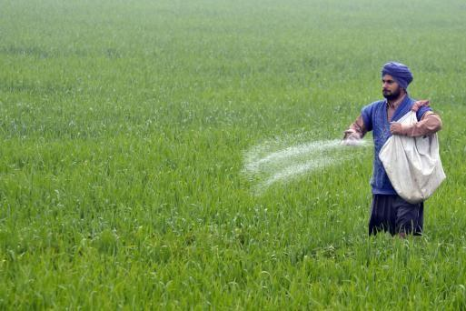
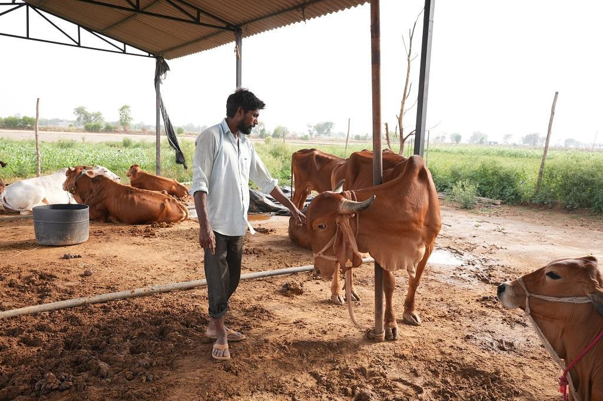

Problem 01
खाद का प्रयोग कब करें

रोपण से पहले: मिट्टी की पोषक स्थिति और फसल की आवश्यकताओं के आधार पर, रोपण से कुछ सप्ताह पहले उर्वरकों को लगाया जा सकता है। इससे यह सुनिश्चित करने में मदद मिलती है कि फसल के शुरुआती विकास को समर्थन देने के लिए मिट्टी में पर्याप्त पोषक तत्व उपलब्ध हैं।
रोपण के समय: उर्वरकों को रोपण या बुवाई के समय लगाया जा सकता है। यह युवा पौधों को तत्काल पोषक तत्व प्रदान करने में मदद करता है और प्रारंभिक जड़ विकास को बढ़ावा दे सकता है।
विकास के दौरान: अधिकांश फसलों के लिए, पौधों की चल रही पोषक तत्वों की जरूरतों को पूरा करने के लिए बढ़ते मौसम के दौरान अतिरिक्त उर्वरकों की आवश्यकता होती है। यह कई अनुप्रयोगों के माध्यम से या धीमी गति से जारी उर्वरकों के उपयोग के माध्यम से किया जा सकता है।
कटाई के बाद: मिट्टी के पोषक तत्वों को फिर से भरने और अगली फसल के लिए तैयार करने में मदद करने के लिए फसल के बाद अंतिम उर्वरक आवेदन से कुछ फसलें लाभान्वित हो सकती हैं।
यह ध्यान रखना महत्वपूर्ण है कि अत्यधिक खाद देने से पोषक तत्वों का असंतुलन, पर्यावरण प्रदूषण और फसल की गुणवत्ता में कमी आ सकती है। आपकी विशिष्ट फसल और मिट्टी की स्थिति के लिए उपयुक्त समय और उर्वरक की मात्रा निर्धारित करने के लिए मिट्टी परीक्षण करने और कृषि विशेषज्ञों से परामर्श करने की सिफारिश की जाती है।
Problem 02
कैसे पता करें कि मिट्टी फसल के लिए अच्छी है या नहीं
बनावट: फसलों के लिए अच्छी मिट्टी की बनावट संतुलित होनी चाहिए, यानी इसमें रेत, गाद और चिकनी मिट्टी का मिश्रण होना चाहिए। इस प्रकार की मिट्टी अच्छी जल निकासी और वातन की अनुमति देती है, जबकि पर्याप्त नमी और पोषक तत्व भी रखती है।
पीएच स्तर: उगाई जा रही विशिष्ट फसल के लिए मिट्टी का पीएच स्तर उपयुक्त सीमा के भीतर होना चाहिए। अधिकांश फसलें 6.0 और 7.5 के बीच पीएच रेंज पसंद करती हैं।
कार्बनिक पदार्थ: उच्च कार्बनिक पदार्थ सामग्री वाली मिट्टी आमतौर पर फसलों के लिए अच्छी मानी जाती है। कार्बनिक पदार्थ मिट्टी की संरचना, पोषक तत्वों की उपलब्धता और जल धारण क्षमता में सुधार करने में मदद करते हैं।
पोषक तत्वों की उपलब्धता: फसल की वृद्धि के लिए मिट्टी में आवश्यक पोषक तत्वों की पर्याप्त आपूर्ति होनी चाहिए, जिसमें नाइट्रोजन, फास्फोरस और पोटेशियम शामिल हैं। मिट्टी के पोषक तत्वों की स्थिति का पता लगाने के लिए मृदा परीक्षण किया जा सकता है।
जलनिकासी: फसलों के लिए अच्छी मिट्टी में जल-जमाव और जड़ क्षति को रोकने के लिए अच्छी जल निकासी होनी चाहिए। पौधे की वृद्धि के लिए मिट्टी को पर्याप्त नमी बनाए रखने में भी सक्षम होना चाहिए।
कीट और रोग: मिट्टी में कीट और रोग की अनुपस्थिति मिट्टी की अच्छी गुणवत्ता का सूचक है। मृदाजनित कीट और रोग फसलों को महत्वपूर्ण नुकसान पहुंचा सकते हैं।

Problem 03
कैसे पता चलेगा कि मेरी गाय बीमार है

व्यवहार में परिवर्तन: एक गाय जो बीमार है वह सुस्त या सुस्त दिखाई दे सकती है। यह खुद को झुंड से अलग भी कर सकता है या अन्य गायों के साथ बातचीत से बच सकता है।
भूख में कमी: एक बीमार गाय कम खा सकती है या पूरी तरह से खाने से मना कर सकती है। इससे वजन कम हो सकता है और अन्य स्वास्थ्य समस्याएं हो सकती हैं।
दूध उत्पादन में कमी: दूध उत्पादन में कमी गाय में बीमारी या तनाव का संकेत हो सकता है। अगर आपकी गाय अचानक से दूध देना बंद कर दे तो यह किसी गंभीर बीमारी का संकेत हो सकता है।
असामान्य निर्वहन: गाय से कोई भी असामान्य निर्वहन, जैसे रक्त या बलगम, बीमारी का संकेत हो सकता है।
श्वसन संबंधी समस्याएं: एक गाय जो खांस रही है, घरघराहट कर रही है, या सांस लेने में कठिनाई हो रही है, वह सांस की बीमारी से पीड़ित हो सकती है।
पाचन संबंधी समस्याएं: डायरिया या कब्ज गायों में पाचन संबंधी समस्याओं का संकेत हो सकता है।
लंगड़ापन: एक गाय जो लंगड़ाती है या एक पैर का पक्ष लेती है, उसके खुर या पैर में चोट या संक्रमण हो सकता है